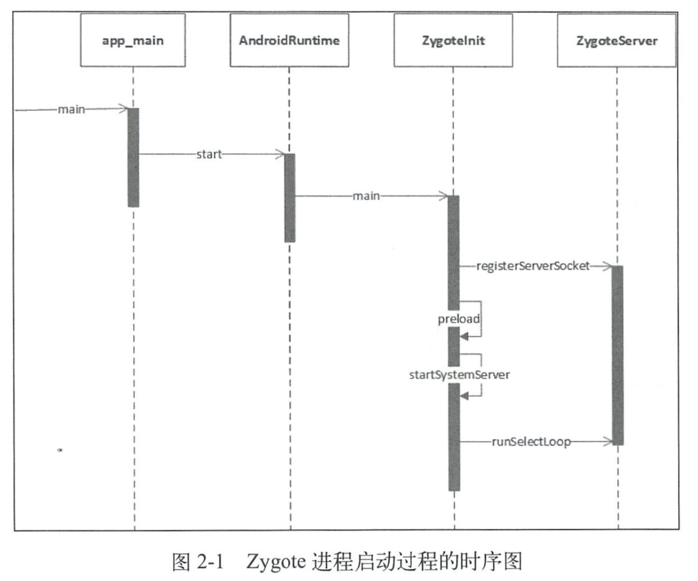
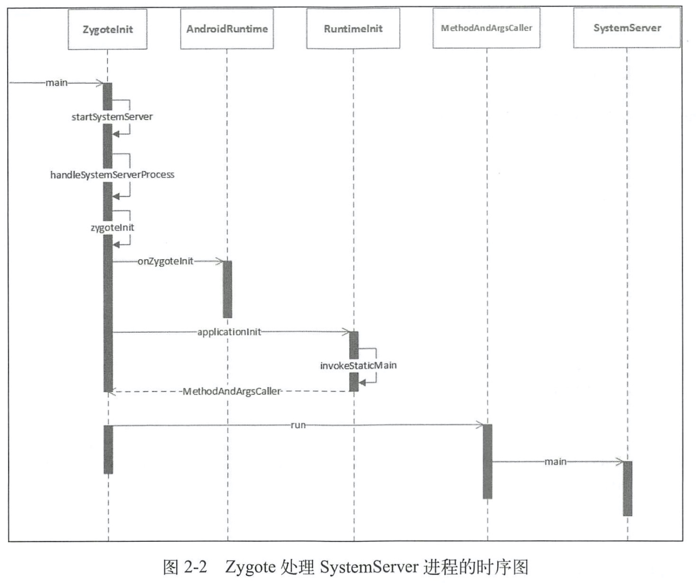
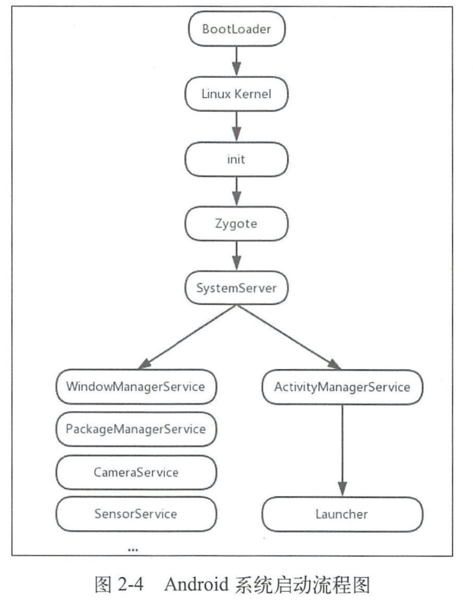

2.1 init进程启动过程
2.1.1 引入init进程
Android系统启动流程的前几步：
- 启动电源以及系统启动
- 引导程序Bootloader
- linux内核启动
- init进程启动
2.1.2 init进程的入口函数
2.1.3 解析init.rc
2.1.4 解析Service类型语句
2.1.5 init启动Zygote
2.1.6 属性服务
2.1.7 init进程启动总结
init进程主要做了三件事：
- 创建一些文件夹并挂载设备
- 初始化和启动属性服务
- 解析init.rc配置文件并启动zygote进程
2.2 Zygote进程启动过程
2.2.1 Zygote概述
在Android系统中，DVM(Dalvik虚拟机)、应用程序进程以及运行系统的关键服务的SystemServer进程都是由Zygote进程来创建的，我们也将它称为孵化器。它通过fock(复制进程)的形式来创建应用程序进程和SystemServer进程，由于Zygote进程在启动时会创建DVM，因此通过fock而创建的应用程序进程和SystemServer进程可以在内部获取一个DVM的实例拷贝。
2.2.2 Zygote启动脚本
2.2.3 Zygote进程启动过程介绍

2.2.4 Zygote进程启动总结
Zygote进程共做了如下几件事：
- 创建AppRuntime并调用其start方法，启动Zygote进程。
- 创建JVM并为JVM注册JNI方法。
- 通过JNI调用ZygoteInit的main函数进入Zygote的Java框架层。
- 通过registerZygoteSocket函数创建服务端Socket，并通过runSelectLoop函数等待ActivityManagerService的请求来创建新的应用程序进程。
- 启动SystemServer进程。
2.3 SystemServer处理过程
2.3.1 Zygote处理SystemServer进程

2.3.2 解析SystemServer进程
2.3.3 SystemServer进程总结
SystemServer进程被创建后，主要做了如下工作:
- 启动Binder线程池，这样就可以与其他进程进行通信。
- 创建SystemServiceManager,其用于对系统的服务进行创建、启动和生命周期管理。
- 启动各种系统服务。
2.4 Launcher启动过程
2.4.1 Launcher概述
系统启动的最后一步是启动一个应用程序用来显示系统中已经安装的应用程序，这个应用程序就叫作Launcher。Launcher在启动过程中会请求PackageManagerService返回系统中已经安装的应用程序的信息，并将这些信息封装成一一个快捷图标列表显示在系统屏幕上，这样用户可以通过点击这些快捷图标来启动相应的应用程序。
通俗来讲Launcher就是Android系统的桌面，它的作用主要有以下两点:
- 作为Android系统的启动器，用于启动应用程序。
- 作为Android系统的桌面，用于显示和管理应用程序的快捷图标或者其他桌面组件。
2.4.2 Launcher启动过程介绍

2.4.3 Launcher中应用图标显示过程
2.5 Android系统启动流程
- 启动电源以及系统启动
当电源按下时引导芯片代码开始从预定义的地方（固化在ROM）开始执行。加载引导程序Bootloader到RAM，然后执行。 - 引导程序BootLoader
引导程序BootLoader是在Android操作系统开始运行前的一个小程序，它的主要作用是把系统OS拉起来并运行。 - Linux内核启动
内核启动时，设置缓存、被保护存储器、计划列表、加载驱动。当内核完成系统设置，它首先在系统文件中寻找init.rc文件，并启动init进程。 - init进程启动
初始化和启动属性服务，并且启动Zygote进程。 - Zygote进程启动
创建JavaVM并为JavaVM注册JNI，创建服务端Socket，启动SystemServer进程。 - SystemServer进程启动
启动Binder线程池和SystemServiceManager，并且启动各种系统服务。 - Launcher启动
